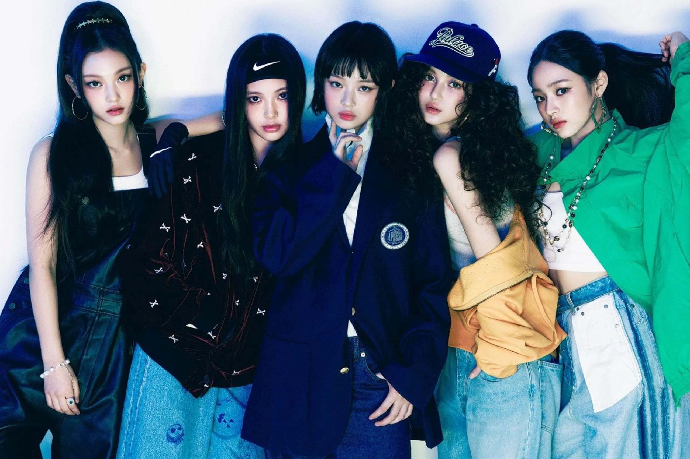
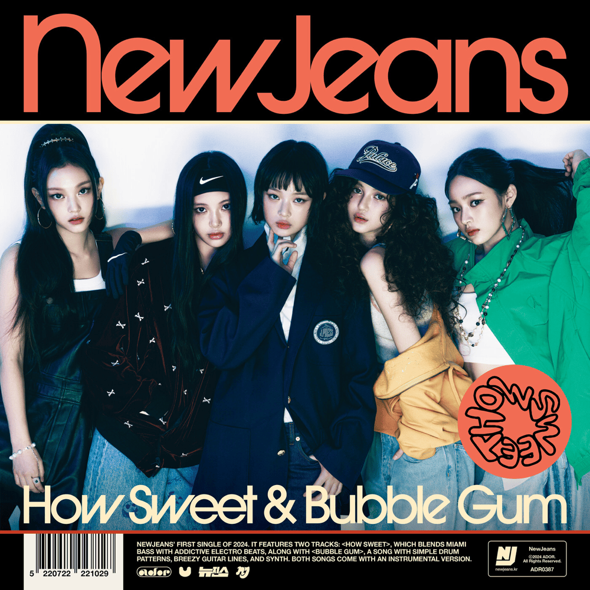
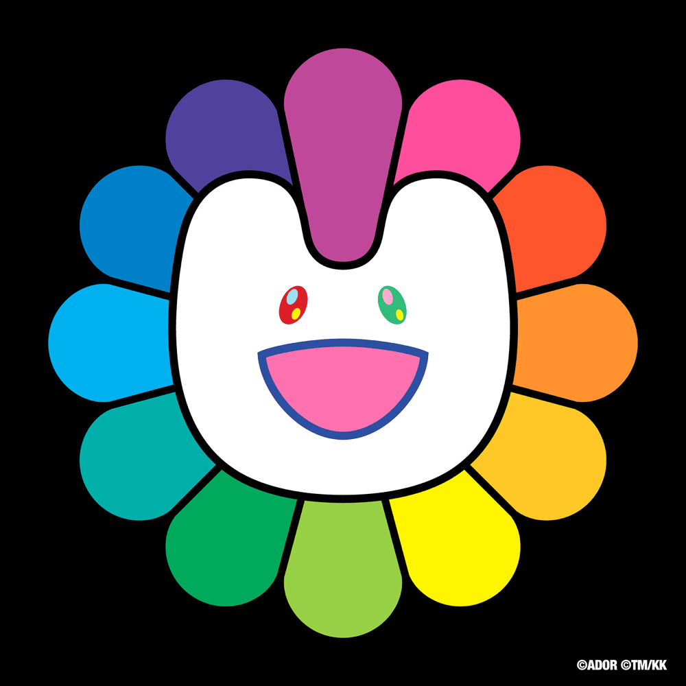

NewJeans is a South Korean girl group that debuted in July 2022 under ADOR, a music label under HYBE. The group originally consisted of five members: Minji, Hanni, Danielle, Haerin, and Hyein. NewJeans became popular for their fresh musical style, catchy melodies, and unique fashion concepts. Their music combines K-pop, pop, and R&B, creating a refreshing sound that attracts many listeners. Some of their well-known songs include “Attention,” “Hype Boy,” “Ditto,” and “Super Shy.” NewJeans is also recognized for its creative music videos, stylish outfits, and memorable performances. Their music often features smooth vocals and enjoyable rhythms. The group has gained international attention and built a large fanbase around the world. I like NewJeans because their songs are catchy, their music videos are interesting, and their style is unique. Their music makes listening enjoyable and entertaining.

